Extração fio a fio
Unidades foliculares retiradas uma a uma da área doadora, sem corte linear.
Técnica FUE fio a fio, desenho da linha capilar planejado para o seu rosto e acompanhamento dermatológico antes e depois da cirurgia.

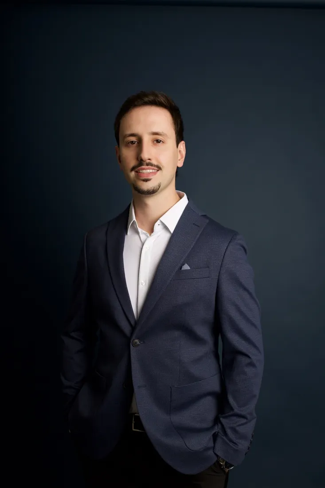
O transplante redistribui fios da área doadora para as regiões de falha. Ele funciona melhor quando alguns critérios são atendidos.

Nem todo caso é cirúrgico. A avaliação mostra o melhor caminho para você.
Quero saber se sou candidatoOs folículos são retirados um a um da área doadora e implantados nas regiões de falha, respeitando ângulo, direção e densidade naturais.
Unidades foliculares retiradas uma a uma da área doadora, sem corte linear.
Pequenos pontos que cicatrizam rápido e ficam cobertos pelo próprio cabelo.
A linha frontal é planejada conforme formato do rosto, idade e expectativa.
Cada folículo é implantado no ângulo e na direção do cabelo original.
Você fica acordado e confortável durante todo o procedimento.
Os folículos da área doadora tendem a resistir à queda de origem genética.
O transplante é uma etapa. O resultado depende do preparo do couro cabeludo e do tratamento clínico que protege os fios nativos.
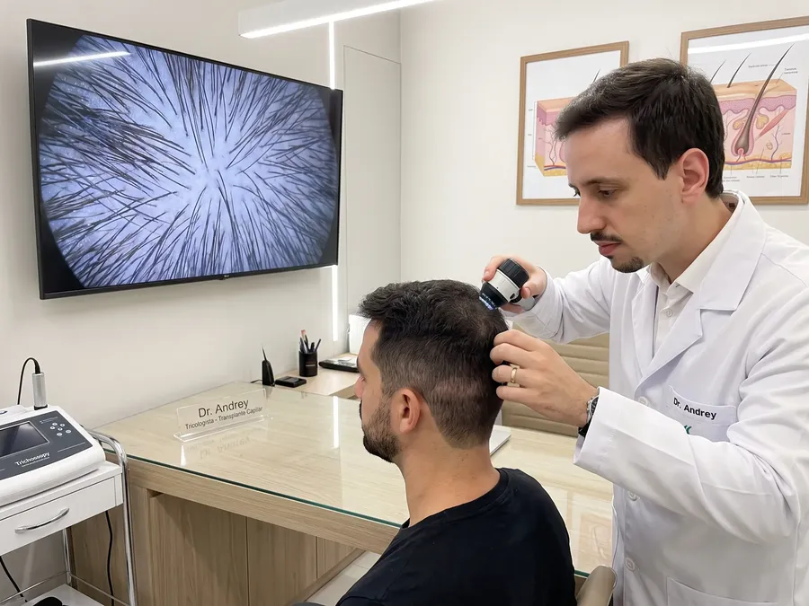
Análise da área doadora, da densidade e do padrão de queda para definir se o transplante é indicado.
Inclui exames e uma conversa sobre expectativas, estimativa de unidades foliculares e etapas.
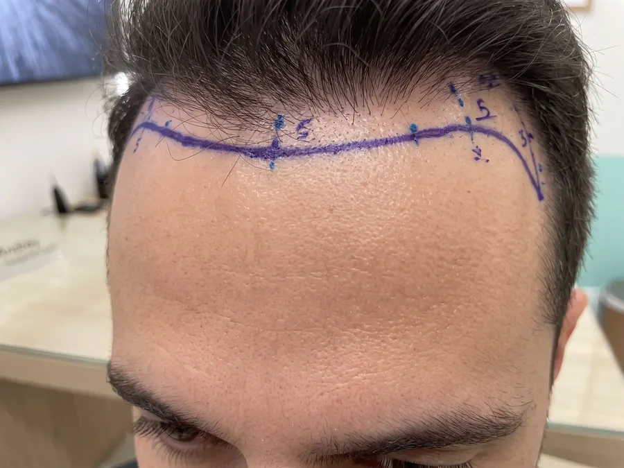
Traçado da nova linha frontal pensado para o seu rosto e para a evolução da queda.
Uma linha natural considera como o cabelo vai se comportar nos próximos anos.
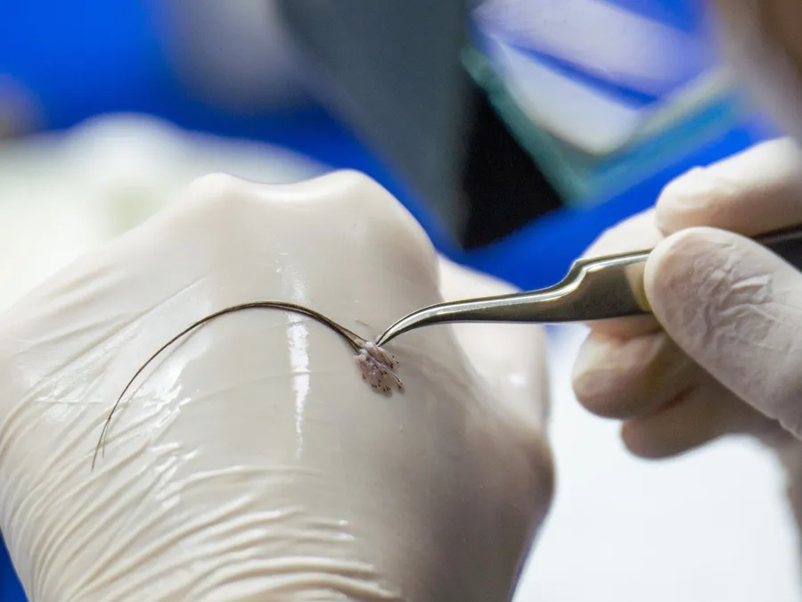
Folículos retirados um a um e implantados com precisão nas áreas de falha.
Procedimento sob anestesia local, conduzido pelo Dr. Andrey Treib, membro da SBRCC.

Medicações e ativos que preparam o couro cabeludo e protegem os fios nativos.
Conduzido pela equipe de dermatologia da Dra. Suelen Mattos.

Ativos aplicados no couro cabeludo para apoiar a recuperação e a qualidade dos fios.
Indicada conforme avaliação, nos meses após a cirurgia.

Fotobiomodulação que estimula o metabolismo dos folículos no pós operatório.
Indolor e sem afastamento.

Lavagens sequenciais no spa capilar do Íris Centro Médico.
Feita com a equipe, para proteger os folículos implantados.
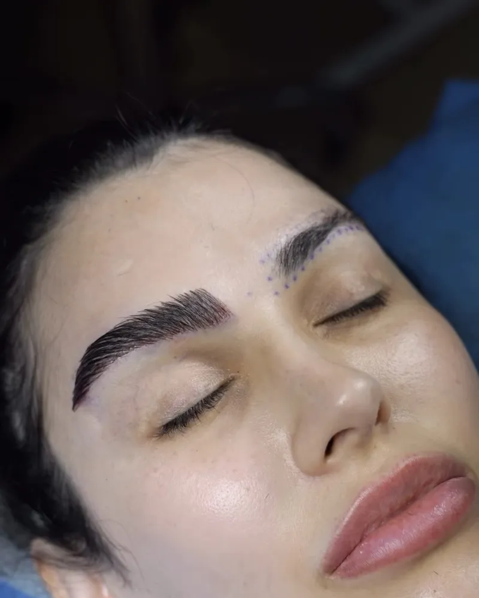
Técnica FUEA mesma técnica FUE aplicada às sobrancelhas. Folículos da nuca são implantados fio a fio, com desenho e direção pensados para o seu rosto.
Os fios transplantados crescem como cabelo e precisam ser aparados periodicamente.
Cirurgia e dermatologia trabalham juntas por um resultado natural e duradouro.
Só indicamos a cirurgia quando ela faz sentido para o seu caso.
Linha frontal, ângulo e densidade planejados para um resultado discreto.

O Dr. Andrey conduz a cirurgia. A equipe da Dra. Suelen cuida da causa da queda.
Ambiente reservado, atendimento sem pressa e cuidado em cada detalhe.
O procedimento leva algumas horas, conforme o número de unidades foliculares. Você vai para casa no mesmo dia.
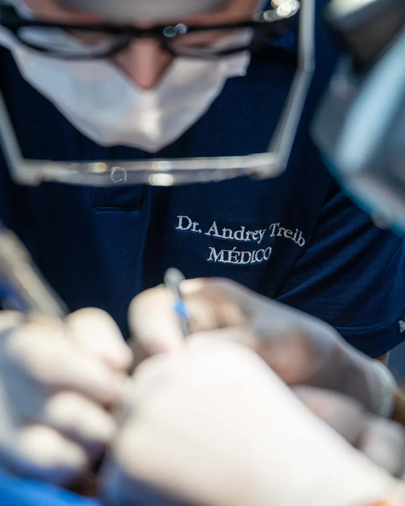
Alta no mesmo diaRecepção, revisão do planejamento e preparo confortável para o procedimento.
A linha frontal e as áreas de implante são marcadas e revisadas com você.
Você permanece acordado e confortável durante todo o procedimento.
Unidades foliculares retiradas uma a uma da área doadora.
Cada folículo é posicionado respeitando ângulo e direção naturais.
Você recebe os cuidados por escrito e vai para casa no mesmo dia.
Cada transplante é planejado para a área doadora e o rosto de cada paciente. Veja casos acompanhados pela nossa equipe.
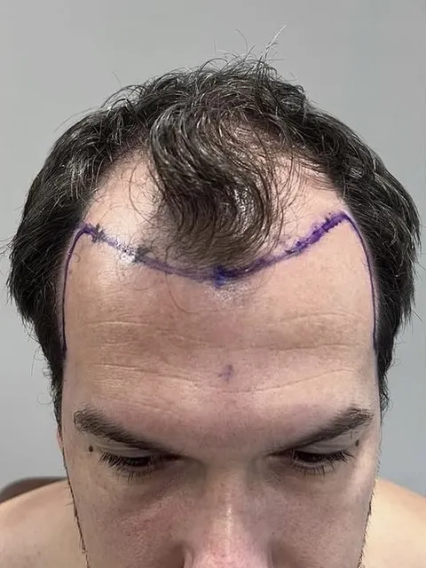
Antes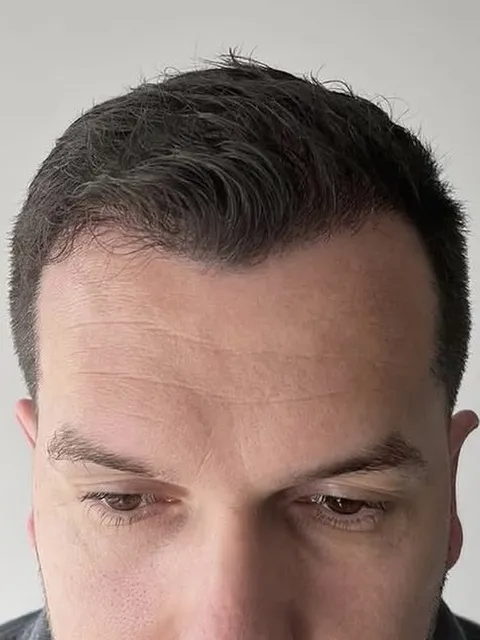
Depois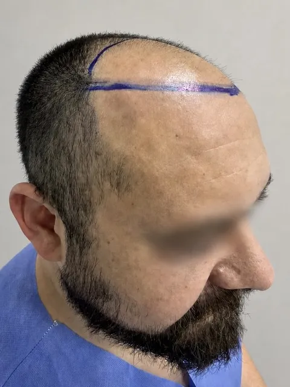
Antes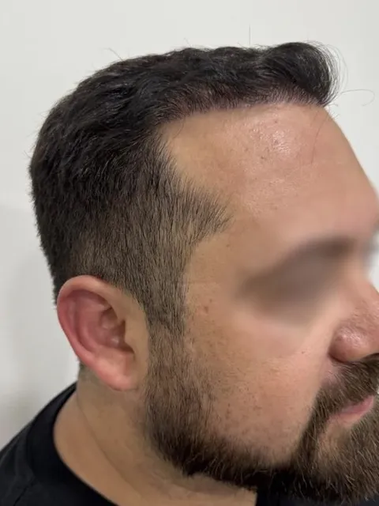
Depois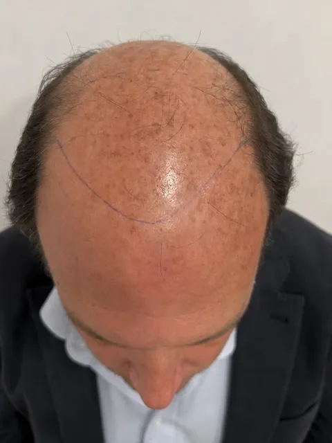
Antes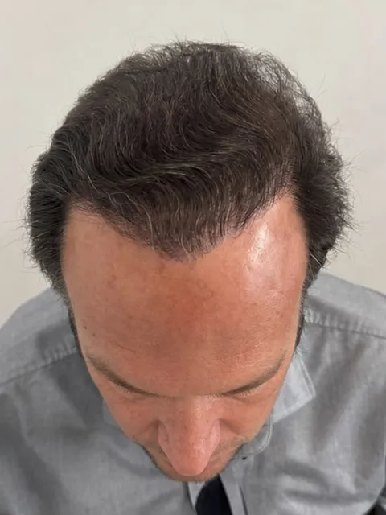
Depois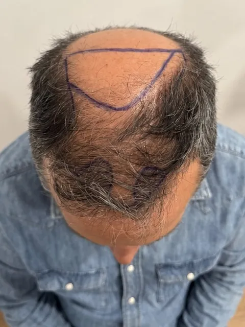
Antes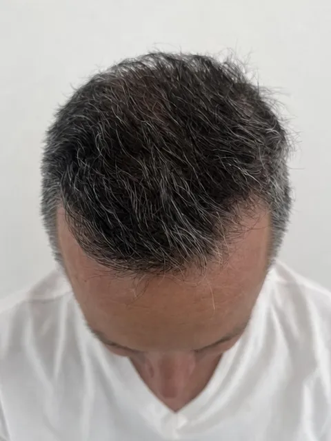
DepoisImagens publicadas com autorização dos pacientes. Resultados variam de pessoa para pessoa e dependem do diagnóstico.

Responsável pelo planejamento e pela execução do transplante capilar no Íris Centro Médico. Acompanha cada caso da avaliação ao resultado final, com foco em naturalidade.
[Trajetória do Dr. Andrey: formação, experiência em cirurgia capilar e por que escolheu a área.]
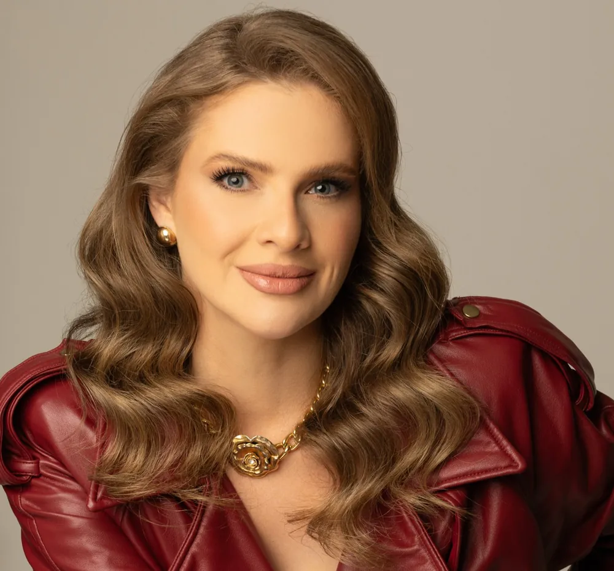
Fundadora do Íris Centro Médico. Sua equipe investiga a causa da queda e conduz o tratamento clínico antes e depois do transplante, para proteger o resultado e os fios nativos.
CRM 20273 · RQE 20755 · Membro da Sociedade Brasileira de Dermatologia (SBD)
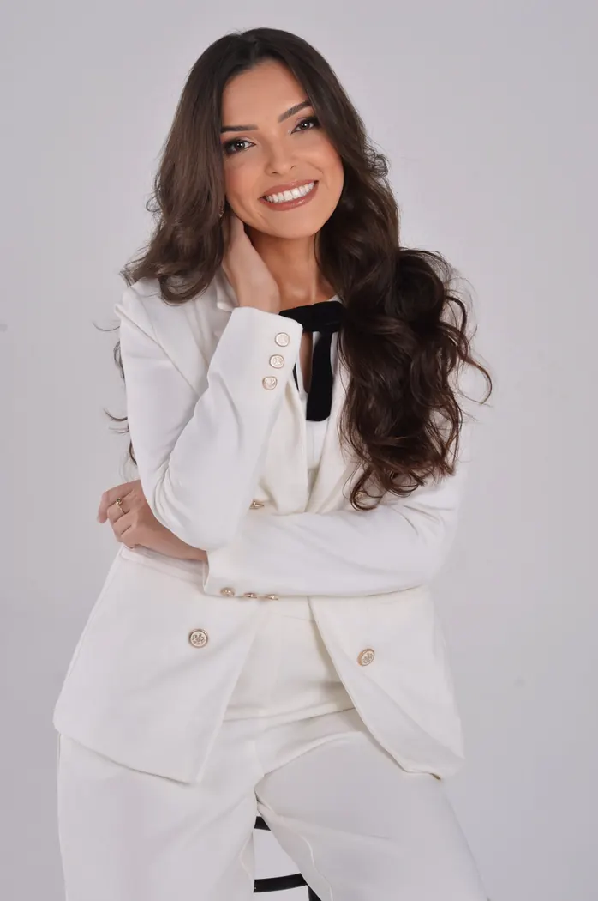
Atuação voltada à saúde da pele e dos cabelos, com foco em diagnóstico, prevenção e tratamentos individualizados, aliando ciência, cuidado e escuta humanizada.
Dra. Jessica Dalvana da Motta Leandro Bayerle · CRM SP 278608 · CRM GO 37188

Adiei o transplante por anos por medo. O Dr. Andrey explicou cada etapa com calma e me passou muita segurança. No dia da cirurgia, me senti cuidado o tempo todo.
O que mais gostei foi a honestidade na avaliação. Explicaram o que dava para fazer com a minha área doadora e o que esperar em cada fase.
A equipe acompanhou toda a recuperação. Sabia que os fios iam cair no começo, então fiquei tranquilo. As orientações por escrito ajudaram muito.
Fiz o tratamento clínico com a equipe da Dra. Suelen antes e depois da cirurgia. Senti que estavam cuidando do cabelo todo, não só da área implantada.
Ambiente muito tranquilo e atendimento sem pressa. Tirei todas as dúvidas antes de decidir.
 Íris Centro Médico
Íris Centro MédicoAtendimento com hora marcada. Fale com a nossa equipe e agende sua avaliação para transplante capilar.
O que os pacientes mais perguntam antes do transplante.
O procedimento é feito com anestesia local. A aplicação da anestesia causa um desconforto leve. Depois disso, a maioria dos pacientes tolera bem a cirurgia.
Algumas horas, conforme a quantidade de unidades foliculares. Você vai para casa no mesmo dia.
Atividades leves costumam ser retomadas em poucos dias. Exercícios intensos, boné e sol direto pedem mais tempo, definido no pós operatório.
A linha frontal, o ângulo e a distribuição dos fios são planejados para um resultado natural. A densidade final depende da sua área doadora.
Nas primeiras semanas, a queda dos fios implantados é esperada. Os folículos permanecem e voltam a produzir fios nos meses seguintes.
Os primeiros fios aparecem entre 3 e 4 meses. O resultado final costuma ser avaliado entre 12 e 18 meses.
Na maioria dos casos, sim. O transplante não impede a queda dos fios nativos. O tratamento clínico ajuda a preservar o cabelo que você já tem.
Não. A indicação depende da estabilidade da queda, da área doadora e do diagnóstico. Em alguns casos, o tratamento clínico é a melhor escolha.
Sim, em casos selecionados. A indicação depende do padrão de queda e da área doadora, avaliados em consulta.
Os folículos são implantados um a um, seguindo a direção e o ângulo naturais da sobrancelha. Como vêm da nuca, os fios crescem como cabelo e precisam ser aparados de tempos em tempos.
Agende sua avaliação com o Dr. Andrey Treib e entenda se o transplante é indicado para o seu caso.